Publickey
https://www.publickey1.jp/
Enterprise ITに軸足を置き、新たにIT業界を変えつつあるクラウドコンピューティングやHTML5など最新の話題を、ブロガー独自の分析を交え、充実した記事で紹介するブログです。毎日更新しています。
フィード
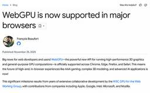
Webブラウザ上でGPUプログラミングを可能にする「WebGPU」、主要なWebブラウザすべてで利用可能に
Publickey
Webブラウザ上で高速なグラフィックス描画を行うWeb標準「WebGL」の後継として登場した「WebGPU」が、ChromeやFirefox、Safariなどの主要なWebブラウザすべてで利用可能になったことが明らかになりました。 WebG...
2日前

AIエージェントを管理する「Microsoft Agent 365」／GitHubで最も使われている言語はTypeScript／MCP on Windowsプレビューほか。2025年11月の人気記事
Publickey
先日、久しぶりに整体に行ったところ、整体師さんから普段のストレッチのためにストレッチポールを勧められました。 ストレッチポールというのは長さ90cm、直径10cmくらいの柔らかい円柱です。これを床の上に置いて、その上に背骨を沿わせるように仰...
2日前
AnthropicがJavaScriptランタイムのBunの買収を発表。Claude Codeのランタイムとしての高速性を評価
Publickey
AIエージェントによるコーディングアシスタントを提供する「Claude Code」などを提供するAntrhopicは、JavaScriptランタイム「Bun」の買収を発表しました。 Bun is joining Anthropic!http...
3日前
AWS、マネージドデータベースを最大35％安く使える「Database Savings Plans for AWS Databases」発表
Publickey
Amazon Web Services（AWS）は、日本時間12月3日未明から開催中の年次イベント「AWS re:Invent 2025」で、同社のマネージドデータベースサービスの価格を最大で35％安くできる「Database Saving...
3日前
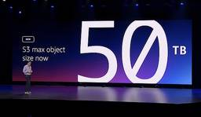
Amazon S3が大幅強化、保存できるオブジェクトサイズが最大の50TBに拡大、バッチ処理速度は10倍速に
Publickey
Amazon Web Services（AWS）は、日本時間12月3日未明から開催中の年次イベント「AWS re:Invent 2025」で、Amazon S3の最大容量と処理性能の大幅強化を発表しました。 Amazon S3はクラウドサー...
3日前
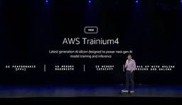
AWS、独自のAI処理専用プロセッサ「AWS Trainium4」を発表。現行のTrainium3の6倍の性能、4倍のメモリ帯域幅を目指す
Publickey
Amazon Web Services（AWS）は、日本時間12月3日未明から開催中の年次イベント「AWS re:Invent 2025」で、同社が独自開発しているAI処理専用プロセッサ「AWS Trainium4」を発表しました。 202...
3日前
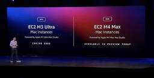
AWS、Apple M3 Ultra/M4 Maxチップに対応したMacインスタンス発表
Publickey
Amazon Web Services（AWS）は、日本時間12月3日未明から開催中の年次イベント「AWS re:Invent 2025」で、Appleシリコンに対応した新しいMacインスンタンス「Amazon EC2 M3 Ultra M...
3日前
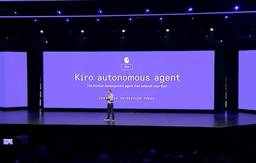
［速報］AWS、AIがフィードバックから学びつつ自律的に開発を行う「Kiro autonomous agent」発表
Publickey
Amazon Web Services（AWS）は、日本時間12月3日未明から開催中の年次イベント「AWS re:Invent 2025」で、まるでチームメンバーのように自律的に開発を行うAIエージェント「Kiro autonomous a...
4日前
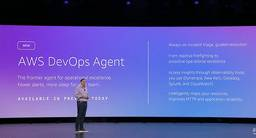
［速報］AWS、障害が発生すると人間より先にAIが調査分析、対処法まで報告「AWS DevOps Agent」プレビュー公開 49
49
Publickey
Amazon Web Services（AWS）は、日本時間12月3日未明から開催中の年次イベント「AWS re:Invent 2025」で、障害に対して自動的に対応するAIエージェント「AWS DevOps Agent」のプレビュー公開を...
4日前
［速報］AWS、基盤モデルをユーザーが独自データで学習させてカスタマイズできる「Nova Forge」発表 10
Publickey
Amazon Web Services（AWS）は、日本時間12月3日未明から開催中の年次イベント「AWS re:Invent 2025」で、同社独自の基盤モデル「Amazon Nova 2」に対してユーザーが独自データを用いて学習させるこ...
4日前
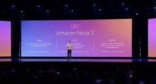
［速報］AWS、独自の基盤モデル「Amazon Nova 2」発表。マルチモーダルなNova 2 Omniも登場 10
Publickey
Amazon Web Services（AWS）は、日本時間12月3日未明から開催中の年次イベント「AWS re:Invent 2025」で、同社独自の基盤モデル「Amazon Nova 2」を発表しました。 Amazon Nova 2は段...
4日前
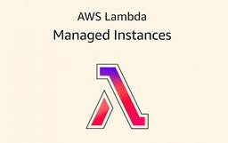
AWS、コンテナではなくEC2インスタンスでサーバレスを構築できる「AWS Lambda Managed Instances」リリース
Publickey
Amazon Web Servicesは、サーバレス基盤「AWS Lambda」の新機能として、コンテナではなくEC2インスタンスでサーバレスアプリケーションを構築できる「AWS Lambda Managed Instances」をリリース...
4日前
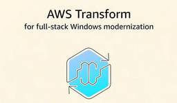
AWS、AIエージェントでレガシーなWindowsアプリをコードもDBもモダンな「.NET＋Aurora PostgreSQL」に自動変換。AWS Transformリリース
Publickey
Amazon Web Servicesは、.NET FrameworkとSQL Serverの構成によるレガシーなWindowsアプリケーションを、モダンな.NETのとAurora PostgreSQLの構成にコードもデータベースも変換する...
4日前
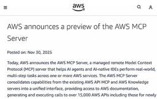
「AWS MCP Server」プレビュー開始。最新のAWS APIからナレッジベースまで包括的にAIからAWSを利用可能に
Publickey
Amazon Web Servicesは、AIを用いてAWSを利用するための新サービス「AWS MCP Server」のプレビュー提供を発表しました。 MCPとは一般に、生成AIやAIエージェントが外部のツールを呼び出して情報を取得したり操...
5日前
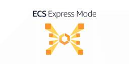
AWS、コンテナアプリケーションのインフラ周りを自動設定してくれる「Amazon ECS Express Mode」提供開始
Publickey
Amazon Web Services（AWS）は、コンテナ化されたアプリケーションのデプロイやスケーリング、運用管理などを提供するフルマネージドサービス「Amazon ECS」（Amazon Elastic Container Servi...
5日前